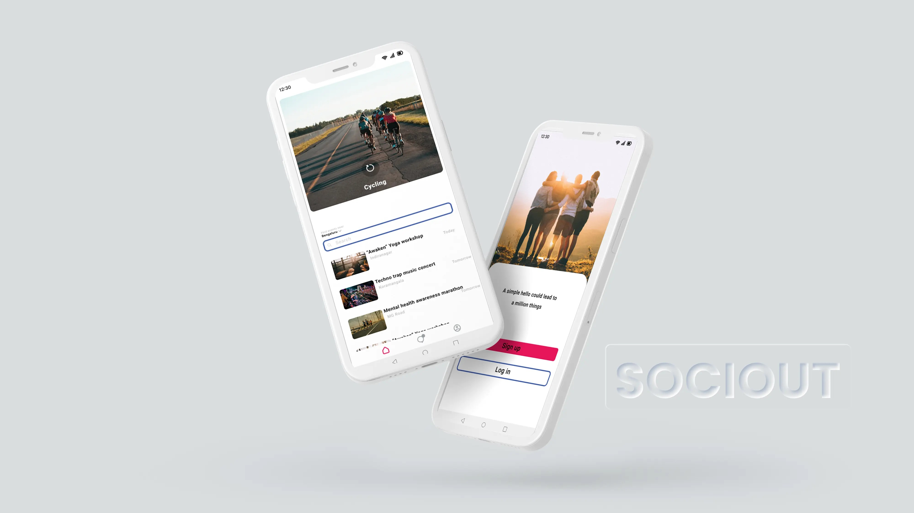
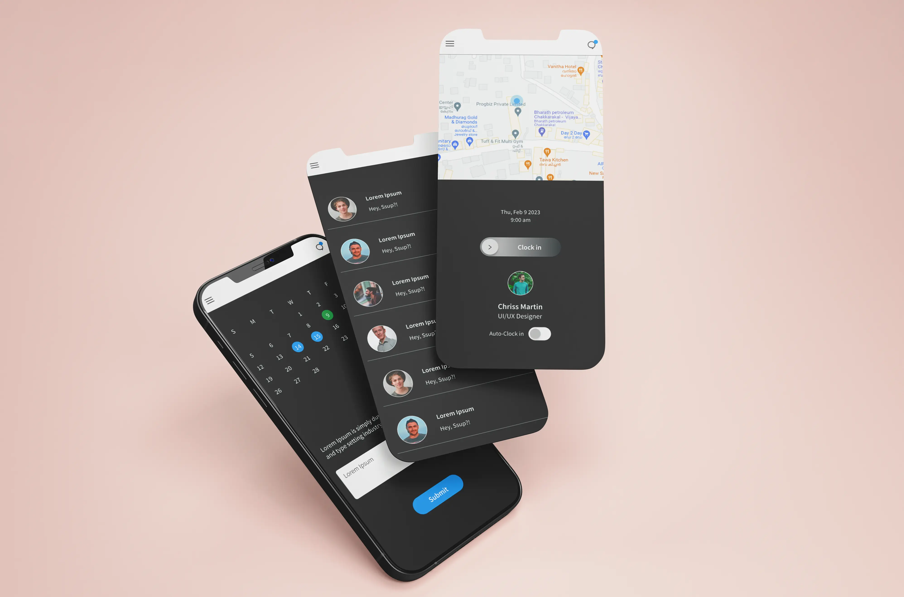
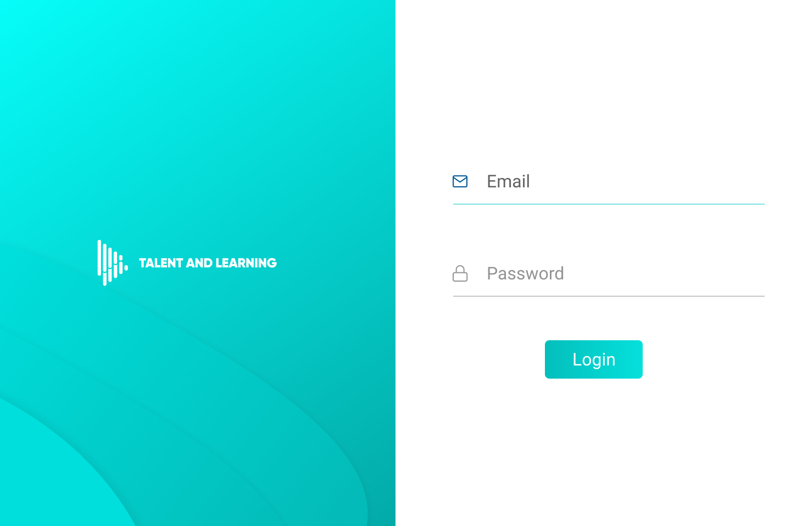

Case Study


Design, to me, is about solving real problems with empathy and clarity. I believe good design feels effortless. It guides, supports, and connects. It's not just about how things look, but how they work and make people feel. I approach every project as a process of learning, refining, and creating with purpose.
A health-tracking app concept that integrates wearable data, lab reports, and personal inputs to visualize organ health, track trends, and provide personalized insights for better lifestyle choices. It helps users understand their body clearly and make small, consistent changes before problems arise.
View Project
A UX case study for an app that helps users easily discover like-minded people and nearby events based on their interests. It simplifies event discovery, socializing, and networking by providing personalized suggestions, best deals, and a smooth user experience.
View Case StudyDesign and development of an aesthetic and user-friendly e-commerce website for a client, contributing to brand identity design and visual consistency using user centred design, vibe coding and shopify.
View ProjectThe Resurg project is a clean, responsive website I designed and developed to showcase the team’s expertise and services, creating a credible digital presence that builds trust and supports collaborations.
View Project
A prototype of an app to track the punctuality and presence of employees.
View Prototype
UI design for an audio transcription web app — featuring a clean login page and a user-friendly home interface.
View DesignI’m a UX/UI designer who enjoys creating simple, thoughtful experiences that make people’s lives just a little bit easier. My background is in business, but I’ve always been drawn to design—how things work, how they feel, and how they can quietly solve real problems.
I don’t believe in flashy for the sake of it. I care more about making things usable, clear, and honest. Whether it's building a brand’s first website or figuring out how to improve a small interaction, I enjoy the process of listening, learning, and making things better. One step at a time.